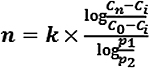
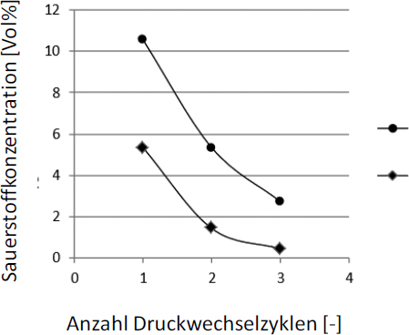

(1) Bei Gasen und Dämpfen kann zwischen partieller und totaler Inertisierung unterschieden werden.
(2) Bei der totalen Inertisierung werden explosionsfähige Gemische dadurch vermieden, dass das Verhältnis des Partialdruckes des Inertgases zu demjenigen des brennbaren Gases oder Dampfes einen bestimmten Grenzwert (s. Tabelle 1) überschreitet. In Abschnitt 1.3 ist ein Rechenbeispiel für eine totale Inertisierung aufgeführt. Der Partialdruck des brennbaren Gases ist oft verfahrenstechnisch oder bei Dampf physikalisch (entsprechend der Dampfdruckkurve der Flüssigkeit) vorgegeben. Dadurch kann eine totale Inertisierung einen erheblichen Überdruck in der Anlage erforderlich machen.
(3) Bei der partiellen Inertisierung muss die in Tabelle 1 angegebene Sauerstoffgrenzkonzentration unterschritten oder der Mindestwert des Verhältnisses der Molanteile von Inertgas (N2 oder CO2) und Luft (L) (zur Inertisierung bei beliebiger Zugabe von brennbarem Gefahrstoff) überschritten werden. Einflüsse nicht atmosphärischer Bedingungen auf die Sauerstoffgrenzkonzentration sind zu berücksichtigen. Ein Rechenbeispiel für eine partielle Inertisierung ist in Abschnitt 1.4 aufgeführt.
(4) In Tabelle 1 sind Beispiele für experimentell ermittelte Sauerstoffgrenzkonzentrationen für Gase und Dämpfe aufgeführt.
Tabelle 1: Grenzwerte für die Inertisierung brennbarer Gase und Dämpfe bei 1 bar Gesamtdruck aus der Datenbank "Chemsafe" der DECHEMA
| Partielle Inertisierung | Totale Inertisierung | ||||||
| Brennbarer Gefahrstoff | Temperatur in °C | Sauerstoffgrenz- konzentration im Gesamtgemisch brennbarer Gefahrstoff/ Inertgas/Luft bei der Inertisierung mit: | Mindestwert des Verhältnisses der Molanteile von Inertgas (N2 oder CO2) und Luft (L) notwendig zur Inertisierung bei beliebiger Zugabe von brennbarem Gefahrstoff | Mindestwert des Verhältnisses der Molanteile von Inertgas (N2 oder CO2) und brennbarem Gefahrstoff (B) notwendig zur Inertisierung bei beliebiger Zugabe von Luft | |||
| N2 | CO2 | N2/L | CO2/L | N2/B | CO2/B | ||
| Cmax O2 in mol % | Cmax O2 in mol % | ||||||
| Acetaldehyd | 50 | 8,4 | – | 1,5 | – | – | – |
| Aceton | 25 | 9,6 | 12,8 | ||||
| Acrylsäure | 60 | 8,0 | – | 1,6 | – | – | – |
| Benzol | 100 | 8,5 | 11,8 | 1,4 | 0,7 | 42 | 22 |
| i-Butan | 20 | 10,3 | 13,1 | 1,0 | 0,5 | 28 | 13 |
| n-Butan | 20 | 9,6 | 13,2 | 1,1 | – | 27 | – |
| n-Butanal | 100 | 8,2 | – | 1,6 | – | – | – |
| 1-Butanol | 60 | 9,0 | 11,9 | ||||
| 1-Butanol | 130 | 8,2 | – | 1,6 | – | – | – |
| t-Butanol | 100 | 10,1 | 13,0 | 1,4 | – | – | – |
| 1-Butoxy-2-propanol | 100 | 8,6 | 11,5 | 1,6 | – | 49 | – |
| n-Butylacetat | 100 | 9,5 | – | 1,2 | – | – | – |
| Cyclohexan | 100 | 8,5 | 11,3 | 1,3 | 0,8 | 54 | 27 |
| Cyclohexanol | 100 | 8,8 | 11,9 | 1,4 | – | – | – |
| Cyclohexanon | 100 | 9,2 | 12,4 | 1,6 | – | – | – |
| Cyclopentanon | 100 | 8,2 | 11,1 | ||||
| Cyclopropan | 20 | 11,7 | 13,9 | – | – | – | – |
| Dimethylether | 20 | 8,5 | – | 1,5 | – | – | – |
| 1,4-Dioxan | 100 | 7,0 | – | 2,0 | – | – | – |
| Dipropylengly- koldimethylether | 150 | 7,4 | – | 1,9 | – | – | – |
| Dipropylether | 100 | 8,4 | – | 1,5 | – | – | – |
| Ethan | 20 | 8,7 | 11,8 | 1,3 | 0,7 | 21 | 11 |
| Ethandiol | 150 | 7,5 | 10,3 | ||||
| Ethanol | 20 | 8,5 | – | 1,4 | – | 17 | – |
| Ethanol | 23 | 8,9 | 11,7 | ||||
| Ethylacetat | 20 | 9,8 | – | 1,1 | – | 23 | – |
| Ethylen | 20 | 7,6 | 10,5 | 1,7 | 0,9 | 24 | 13 |
| Ethylenoxid | 20 | wegen Zerfallsfähigkeit von Ethylenoxid existieren diese Werte nicht | 17 | 15 | |||
| Heptan | 100 | – | 10,9 | – | 0,9 | – | 35 |
| Hexamethyldisiloxan | 80 | 8,9 | – | 1,4 | – | – | – |
| Hexan | 20 | 9,1 8,3 (100 °C) | 11,6* (100 °C) | 1,3 | 0,8* (100 °C) | 42 | 32* (100 °C) |
| 1-Hexanol | 100 | 8,6 | 11,5 | 1,5 | – | – | – |
| Kohlenmonoxid | 20 | 6,2 | – | 3,1 | 1,7 | 6 | 3 |
| Methan | 20 | 9,9 | 13,6 | 1,0 | 0,4 | 11 | 5 |
| Methanol | 23 | 8,0 | 10,3 | 1,4 | – | 7 | – |
| Methanol | 100 | 7,3 | 9,8 | ||||
| Methylethylketon (2-Butanon) | 20 | 9,5 | – | 1,2 | – | 26 | – |
| Methylethylketon (2-Butanon) | 25 | 9,2 | 12,2 | ||||
| n-Pentan | 9,3 | – | ~1,3 | – | ~42 | – | |
| Pentylacetat | 100 | 9,2 | – | 1,3 | – | – | – |
| 2-Pentanon | 25 | 9,6 | 12,8 | ||||
| 3-Pentanon | 25 | 9,0 | 11,9 | ||||
| Propan | 20 | 9,3 | 12,6 | 1,1 | 0,6 | 26 | 13 |
| 1-Propanol | 20 | 9,3 | – | 1,3 | – | 19 | – |
| 1-Propanol | 40 | 9,1 | 12,0 | ||||
| 2-Propanol | 23 | 9,8 | 13,0 | 1,4 | – | 25 | – |
| 2-Propanol | 100 | 9,1 | 12,2 | ||||
| Propylen | 20 | 9,4 | 12,5 | 1,2 | 0,6 | 23 | 12 |
| Propylenoxid | 25 | 7,7 | 10,3 (20 °C) | 1,7 | – | 26 | – |
| Propylformiat | 20 | 9,8 | – | 1,1 | – | 21 | – |
| Schwefel-kohlenstoff | 20 | 4,6 | – | 3,5 | – | 49 | – |
| Tetrahydrofuran | 100 | 8,3 | – | 1,5 | – | – | – |
| Toluol | 100 | 9,6 | 12,9 | 1,1 | 0,6 | 42 | 21 |
| Wasserstoff | 20 | 4,3 | 5,2 | 3,4 | 1,8 | 17 | 12 |
| Xylol | 100 | 9,7 | 13,1 | 1,1 | 0,6 | 42 | 21 |
"~" = Schätzwert
* Konzentration bei 20 °C nicht erreichbar
(5) Die Sauerstoffgrenzkonzentration hängt vom Inertgas ab. Sie sinkt für die meisten Stoffe mit steigender Temperatur. Die Temperaturabhängigkeit kann in guter Näherung für viele Gefahrstoffe als Gerade dargestellt werden:
SGKI (T) = SGKI (T0 ) ⋅ (1 + ks [T – T0])
Dabei ist SGKI(T) die Sauerstoffgrenzkonzentration für das Inertgas I (in Vol.-%) bei der Temperatur T (in °C), SGKI(T0) die entsprechende Sauerstoffgrenzkonzentration (in Vol.-%) bei der Bezugstemperatur T0 (in °C) und ks die Änderung der SGK pro K (Temperaturkoeffizient in K-1). Tabelle 2 fasst die bekannten Werte für ks für die gängigen Inertgase N2, CO2 und H2O-Dampf zusammen.
(6) Zur Druckabhängigkeit der Sauerstoffgrenzkonzentration liegen nur wenige Messungen vor, so dass an dieser Stelle keine allgemeingültige Abschätzformel gegeben werden kann.
Tabelle 2: T emperaturkoeffizient zur Berechnung der Sauerstoffgrenzkonzentration (Auswertung der empfohlenen Datensätze aus CHEMSAFE)
| Substanz | Ks (N2) K-1 | Ks (CO2) K-1 | Ks (H2O) K-1 |
| Wasserstoff | -0,0018 | -0,0013 | -0,0013 |
| Kohlenmonoxid | -0,0016 | -0,0012 | -0,0011 |
| Methan | -0,0012 | -0,0005 | -0,0006 |
| Ethan | -0,0012 | -0,0008 | -0,0006 |
| Propan | -0,0012 | -0,0007 | -0,0008 |
| i-Butan | -0,0012 | -0,0007 | -0,0003 |
| n-Hexan | -0,0012 | 0 | |
| Cyclohexan | -0,0004 | -0,0010 | |
| Ethen | -0,0009 | -0,0006 | |
| Propen | -0,0005 | -0,0006 | |
| i-Buten | -0,0011 | -0,0005 | -0,0007 |
| Benzol | -0,0011 | -0,00065 | |
| Toluol | -0,0010 | -0,0005 | |
| o-Xylol | -0,0008 | -0,0006 | |
| Methanol | -0,0013 | -0,0007 | |
| Ethanol | -0,0007 | -0,0004 | |
| Propanol | -0,0011 | ||
| i-Propanol | -0,0004 | -0,0004 | |
| Butanol | -0,0002 | ||
| tert.-Butanol | -0,0004 | ||
| Hexanol-1 | -0,0013 | ||
| Propylformiat | -0,0009 | ||
| Ethylacetat | -0,0011 | ||
| Butylacetat | -0,0012 | ||
| Butanon-2 | -0,0016 | ||
| Cyclohexanon | -0,0008 | ||
| Dimethylether | -0,0011 | ||
| Dipropylether | -0,0012 | ||
| Tetrahydrofuran | -0,0012 | ||
| Dioxan | -0,001 | ||
| Acetaldehyd | -0,001 | ||
| Acrylsäure | -0,0012 | ||
| Schwefelkohlenstoff | -0,0008 |
(1) In Tabelle 3 sind Beispiele für experimentell ermittelte Sauerstoffgrenzkonzentrationen für Stäube aufgeführt.
(2) Die Werte in Tabelle 3 dienen nur als Anhalt. Sicherheitstechnische Kenngrößen von Stäuben sind abhängig von der Beschaffenheit der Stäube wie z. B. Zusammensetzung, Korngröße, Wassergehalt und Oberflächenstruktur sowie ggf. vom gewählten Untersuchungsverfahren (s. a. GESTIS Staub Ex-Datenbank: https://staubex.ifa.dguv.de/).
(3) Zum Vermeiden von Glimm- oder Schwelbränden bei Ablagerungen brennbarer Stäube müssen zum Teil noch wesentlich niedrigere Sauerstoffkonzentrationen eingehalten werden, als es zum Vermeiden von Staubexplosionen notwendig ist. Die dafür maßgeblichen Sauerstoffkonzentrationen müssen gesondert ermittelt werden.
Tabelle 3: Sauerstoffgrenzkonzentration für verschiedene Stäube für das Inertisieren von Staub/Luft-Gemischen durch Stickstoff bei einer Gemischtemperatur von etwa 20 °C und einem Gesamtdruck von etwa 1 bar
| Feinheit (Medianwert) [µm] | Sauerstoffgrenz- konzentration (Molgehalt in der Gasphase) [%] | |
| ABS Mischgut | 125 | 11 |
| Aluminium | 22 | 5 |
| Bariumstearat | < 63 | 13 |
| Braunkohle | 63 | 12 |
| Cadmiumlaurat | < 63 | 14 |
| Cadmiumstearat | < 63 | 12 |
| Calciumstearat | < 63 | 12 |
| Cellulose | 22 | 9 |
| Erbsenmehl | 25 | 15 |
| Harnstoff | < 10 | 10 |
| Harz | < 63 | 10 |
| Herbizid | 10 | 12 |
| Holz | 27 | 10 |
| Hopfen | 500 | 17 |
| Kakao | < 63 | 9 |
| Kautschuk | 95 | 11 |
| Kolophonium, Balsamharz | 440 | 12 |
| Lykopodium | 30 | 7,5 |
| Maisstärke | 17 | 9 |
| Malzschrot | 25 | 11 |
| Methionin | < 10 | 12 |
| Methylcellulose | 70 | 10 |
| Organisches Pigment | < 10 | 12 |
| Paraformaldehyd | 23 | 6 |
| Polyacrylnitril | 26 | 10 |
| Polyethylen (HDPE) | 26 | 10 |
| Polymethacrylat | 18 | 7 |
| Roggenmehl Typ 1150 | 29 | 13 |
| Ruß | 13 | 12 |
| Stärkederivat | 24 | 14 |
| Steinkohle (Fett-) | 17 | 14 |
| Wachs | < 10 | 11 |
| Weizenmehl Typ 550 | 60 | 11 |
| Zink | < 10 | 10 |
Nachfolgend ist ein Rechenbeispiel für die totale Inertisierung mit zwei unterschiedlichen Inertgasen aufgeführt:
Nachfolgend ist ein Rechenbeispiel für die partielle Inertisierung aufgeführt:
Vorgehensweise:
Bei der Druckwechselinertisierung wird der Druck ausgehend vom Umgebungsdruck durch Zugabe von Inertgas erhöht. Nach diesem Schritt wird das Gas an die Atmosphäre abgegeben, bis der Umgebungsdruck wieder erreicht ist. Dieser Druckwechselzyklus wird wiederholt, bis die Sauerstoffkonzentration den Zielwert erreicht oder unterschreitet.
Verfahren geeignet für:
Dieses Verfahren ist nur geeignet, wenn die Anlage die erforderliche Druckfestigkeit aufweist.
Anwendung:
Die Anzahl der erforderlichen Druckwechselzyklen kann durch Berechnung nach der Formel

abgeschätzt werden.
| cn | Sauerstoffkonzentration nach n Druckwechselzyklen |
| c0 | Ursprüngliche Sauerstoffkonzentration |
| ci | Sauerstoffkonzentration im Inertgas |
| p1 | niedrigerer Druck (absolut) |
| p2 | oberer Druck (absolut) |
| k | isentropischer Exponent (cp/cv); 1,4 für zweiatomige Gase wie Luft) |
| n | Anzahl der Druckwechselzyklen |
Diese Gleichung basiert auf der konservativen Annahme, dass Kompression und Expansion adiabatisch sind. Wenn Komprimierung und Expansion ausreichend langsam sind, um als isotherm angenommen zu werden, kann k = 1 verwendet werden.
Als Beispiel ist in dem folgenden Diagramm die Abnahme der Sauerstoffkonzentration in Abhängigkeit der Druckwechselzyklen dargestellt (ci = 0,1 Vol%).

Diese Methode setzt voraus, dass Gasaustausch in allen Anlagenteilen stattfindet und kann daher bei Vorliegen von nicht durchströmten Rohrleitungsstücken zu unzureichenden Ergebnissen führen. In diesen Fällen wird eine Druckwechselinertisierung durch Anlegen von Vakuum empfohlen.